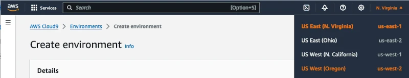

AWS Website to S3
Overview
In this scenario, you found a job or internship that you want to apply for. In the job description, they have a MINIMUM requirement of S3 knowledge. You noticed they PREFER candidates who have experience with hosting websites in S3 buckets and can deploy code to the bucket. To build your resume, you will put code into an S3 bucket and make the website public directly from the S3 bucket.
Business Requirements
-
Auto scaling web system for many users
Project Requirements
-
Deploy a web application to an AWS S3 (autoscaling) bucket directly from your computer
-
Use AWS (Amazon Web Services) and S3 Buckets
-
Open necessary firewalls and ports for the website to work for clients who do not have a login to AWS
Table of Contents
- Create an S3 bucket to deploy your website with autoscaling
- Login to your AWS Academy account
- Deploy code to an S3 bucket from your computer
- Two options: On Your Own or Need More Guidance
- Still not sure where to find S3 Buckets how to use it?
- Deploy the S3 bucket webpage files to the internet
- HTTP vs HTTPS (the ‘S’ is secure = it is encrypted)
- Website URL
- Troubleshooting & Common Problems
- Learning More
Project Instructions
Create an S3 bucket to deploy your website with autoscaling
WHEN YOU MAKE THE BUCKET IT MUST HAVE YOUR NAME IN IT (at least your first or last name)
Login to your AWS Academy Account
-
Open your Learner lab. If you can’t remember how, follow this document
Deploy code to an S3 bucket
To access various resources in AWS like an S3 bucket (a network file storage system similar to your hard drive on your computer, but available on the internet), you can do this directly using AWS.
Change your region to US West by clicking on the N. Virginia near the top right corner of your browser. This change to the Oregon computer/servers that we deployed in Oregon will be found, which is physically closer to Idaho.
Click Open next to your Cloud9 IDE

You now have two options:
-
Option 1: Do it on your own with AWS Documentation
-
Option 2: Need more guidance on where to start
Upload a file to an S3 bucket using the interface
If needed, google What is AWS S3 or How do you upload files to an S3 bucket
Still not sure where to find S3 and how to use it?
-
Upload your index.html file to the S3 bucket
-
Can't figure it out? Google How do I deploy an file from my computer to an S3 bucket
Deploy the S3 bucket webpage files to the internet
-
First, make sure that you did the steps above, you have an S3 bucket with your name in it AND make sure that you uploaded an index.html file to the S3 bucket
-
Overview:
-
Find the URL for your webpage:
-
Enable static web hosting:
-
Modify the bucket permissions ON STEP 2 - Add a bucket Policy:
MAKE SURE TO replace the code in red with YOUR BUCKET NAME
-
Save changes to the bucket policy. It should like something like this (replace the orange with your bucket name)
{
"Version": "2012-10-17",
"Statement": [
{
"Sid": "PublicReadGetObject",
"Effect": "Allow",
"Principal": "*",
"Action": [
"s3:GetObject"
],
"Resource": [
"arn:aws:s3:::Bucket-Name/*"
]
}
]
}
HTTP vs HTTPS (the ‘S’ is secure = it is encrypted)
For your website to be secure, you need to add an SSL certificate and AWS requires Cloudfront distribution on top of the S3 bucket if you want https. Because we aren’t using Cloudfront, you have to use http (not https).
We will load our site with http:// (not https://). Passwords would be visible on the network by using http. This is a big security problem. Don’t add authentication to this scenario.
Website URL
The URL of your site should be something like this:
http://yourbucketname.s3.amazonaws.com
Troubleshooting & Common Problems
If the webpage doesn't load
-
You may need to add the bucket policy
-
Make sure to replace the bucket name in the bucket policy
-
Did you use http:// instead of https://
-
Did you make the bucket public
References that might help
Working with Amazon S3 Buckets
Learning More
Want to learn more about AWS? Take ITM310 Applied Cloud Computing.
Build your resume: Deployed a Javascript website to an AWS S3 bucket
Build your resume (FUTURE project): Implemented AWS CloudFront distribution for a Javascript website in an S3 bucket
Learning More - Add a Version Control Repository
Build your resume (FUTURE project): Built a CD/CI pipeline from an Git repo for a Javascript website to an S3 bucket